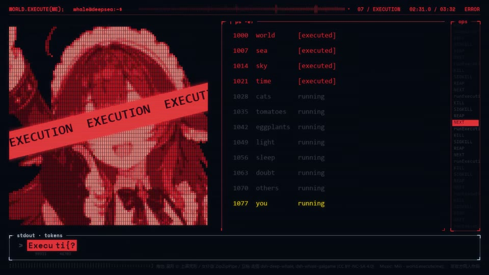

← 案例图谱AI01 / 主要视觉研究样本
〖4K〗如果聊天窗口就是她的整个世界 —— world.execute(me)
西西弗斯的风车 · 105万播放快照 · ≥10万 · B站原作 ↗
把“程序执行”读成关系变化：主面板、大标题和角色之间如何交换注意力？红黑高潮与冷色界面怎样形成情绪分段？

约151.000秒 · 案例代表帧从画面里找依据
这一例先看什么
蓝灰界面转红色执行段再回冷蓝，统一边框维持联系；聊天/函数/点阵与大字替换体现信息层级。
审美判断
RUN、EXECUTION、大数字、矩阵/曲线有明确主焦点；固定终端中小号日志很多，主要与辅助信息应分层阅读，不能把全屏代码都当待读字幕。
迁移到自己的题材
产品功能解释、推理线索、人物关系、搜索与等待、制度压力、人与机器的关系。
教学提问：此刻观众必须读懂哪一条信息？如果所有界面都在动，谁仍然是主角？
带画面的分析单元
图像标出取样时间，对应观察中的关键状态。单帧不能独立证明运动，连续性请结合摘录。表达作用与应用场景是教学解读，复现路线是建议，不是原作者工程还原。
分析单元 01 / 8—24秒
终端输入／光标／字符网格
实际观察
深色界面中以终端与字符信息组织画面，主信息与环境日志具有不同层级。
表达作用（教学解读）
用规则、选择与反馈组织关系，让抽象状态可被看见。
具体应用场景
人物关系、搜索、等待、推理、产品功能解释、系统压力；数值需要真实含义或明确虚构设定。
复现建议（非原作者工程还原）
定时截取字符串，光标单独显隐；网格字符按遮罩绘制。
直出判断：规则版可程序化；完整美术与源素材需准备。
常见误用：假数据制造伪解释；辅助文字太暗；每个窗口同时运动；手机界面只是装饰外壳。
分析单元 02 / 40—42秒
参数曲线／切线与移动标记
实际观察
曲线、切线和标记点在坐标空间建立关系；这是图形内部变化。
表达作用（教学解读）
把可控规则变成可见变化；通过不变量、比例和相位建立秩序或空间。
具体应用场景
概念解释、音乐可视化、抽象世界、图表、程序艺术。
复现建议（非原作者工程还原）
参数化曲线采样，切线与标签绑定运动点。
直出判断：规则版可程序化；完整美术与源素材需准备。
常见误用：符号无含义；空间复杂度替代概念清晰；将程序生成误等同于文生视频生成。
分析单元 03 / 80—82秒
计数器／粒子拆散／面板重排
实际观察
百分数变化、连线散成点和版式重排分层发生，不能把每个数字变化算换镜。
表达作用（教学解读）
用运动方向、尺度和密度建立空气、空间或情绪；装饰层应服务焦点。
具体应用场景
回忆、季节、梦幻、寒冷、散场、能量爆发、文本聚散。
复现建议（非原作者工程还原）
数字插值、点线显隐与布局状态机分别控制。
直出判断：规则版可程序化；完整美术与源素材需准备。
常见误用：平均铺满；近远粒子大小与模糊无差别；粒子挡脸；用程序火星冒充纪实拍摄。
分析单元 04 / 148—152秒
大标题—终端—字带—人物快切
实际观察
所查四秒至少4次主要构图连接；红黑配色、边框维持视觉联系，倾斜字带属于局部层。
表达作用（教学解读）
把阅读顺序变成观看顺序；用字重、位置与停留表达强调、犹豫或压迫。
具体应用场景
观点短片、歌词视觉、人物宣言、章节、情绪高潮；先决定哪些词必须读懂，哪些只是纹理。
复现建议（非原作者工程还原）
先定义五种构图和时间表，硬切为骨架；字带旋转重复排布。
直出判断：规则版可程序化；完整美术与源素材需准备。
常见误用：每个字都弹跳、整句停留不足、所有文字同时争主位。严肃叙事里无理由的回弹会削弱重量。
分析单元 05 / 176—178秒
画幅压线／文字散开
实际观察
画面收缩成细横线、文字或像素散开；具体全程以原记录为边界。
表达作用（教学解读）
把阅读顺序变成观看顺序；用字重、位置与停留表达强调、犹豫或压迫。
具体应用场景
观点短片、歌词视觉、人物宣言、章节、情绪高潮；先决定哪些词必须读懂，哪些只是纹理。
复现建议（非原作者工程还原）
缩放或矩形遮罩控制画幅，字符采点后位置插值。
直出判断：规则版可程序化；完整美术与源素材需准备。
常见误用：每个字都弹跳、整句停留不足、所有文字同时争主位。严肃叙事里无理由的回弹会削弱重量。
用连续画面核对
保留原研究的多段局部摘录。片段含音轨不代表已听审；本资料不评价音乐卡点或对白节奏。
短时变化怎样理解
既有148–152秒连续帧确认至少4次主要构图替换；字符闪烁、百分数增长不额外计刀。大字段为复杂界面提供对比。
把镜头连接、版式更新、局部图层变化和镜内运动分开记录。所查窗口是下限，不是全片平均或AI／人工排名。
原始逐窗记录 →这次练习的约束
用同一句“正在寻找一个人”做三种状态：有秩序的搜索、遇阻、失控。每版只允许一个主信息区和两层辅助信息。
先写“我希望观众明白／感到什么”，再选本页的一种手法。完成无效果基础版后再加层；解释新增层带来的收益和代价。
打开练习与复盘表 →来源、观看范围与制作归属
实际检查范围：Systematic still sampling and two dense excerpts; not continuous audiovisual viewing.
制作线索：含AI生成内容；简介列出dsh界面/角色素材
边界：AI内容标识不证明所有人物/立绘/音乐均生成，署名来源需保留。视频里的参数、命令和错误属于虚构叙事，不能当真实模型参数或执行指令。
播放快照保存时间（UTC）：2026-10-20T10:41:43.392678+00:00。H30制作方式为推定；同源改编、仿作和转载依原记录标注。
原始案例记录 · 选样表把你的判断留下来
笔记仅尝试保存在本机浏览器；浏览器策略可能限制本地文件存储，重要内容请导出。
沿着同一问题继续阅读
 H35
H35漫画、纸张与记忆
临摹教材的用途是理解规则再做变体。先指出借用了什么，再检查自己更换内容后是否仍讲得清楚。
机制／局限参考9个分析单元
漫画、纸张与记忆
扫描线暗场、撕纸与石纹拼贴、留白飞散字形成多种段落；人物踩字面和递归框将文字纳入空间关系。
主要样本7个分析单元
 H10
H10界面、程序与秩序
紫火跨场景门与年代对照、路线头像、任务条和生日群像服务平行世界二创情节，UI有明确用途。
主要样本8个分析单元